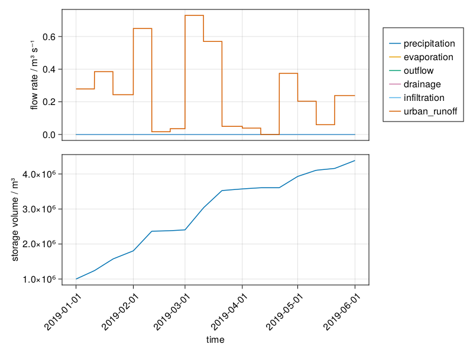

The following examples demonstrate the water management and user allocation functionality for a level controlled LSW. Polder de Tol is used as the example for these demonstrations.
2 Demonstration of Free Flowing LSW
The following examples demonstrate the impact of forcings and the user allocation functionality for a single free draining LSW. The examples are simulated with synthetic data to highlight the functionality of Bach, with the exception of example 1.8 and 1.9 which shows the Bach prototype simulation of the Hupsel LSW.
Code
# Set up for demo simulationsusingPkgPkg.activate("..");# Load Julia LibrariesusingAbbreviatedStackTracesusingBachusingDuetusingDatesusingTOMLusingArrowusingDataFramesimportBasicModelInterface as BMIusingSciMLBaseusingGraphsusingGLMakieusingCairoMakieusingPlotsusingDataFrameMacros
This fictional free flowing LSW has no input or output forcing flux. The LSW empties according to the Volume-Area_Discharge relationship. The two examples below show the impact the profile has on the LSW drainage.
This fictional free flowing LSW is simulated with only the external forcing of synthetic precipitation data. The storage and the outflow respond to the preciptation as shown below.
The LSW loses water from evaporation. Outflow occurs according to the VAD as in example 1.1, but overall volume decline is faster rate due to additional loss from evaporation. Evaporation does not occur in an empty LSW.
The second example shows the LSW with no simulated discharge, so that the only output is evaporation
Infiltration is a negative flux of the LSW. This example shows the LSW storage responding to an enhanced forcing of infiltration. There is no outflow simulated of this LSW, so that the only output is the infiltration.
Urban runoff is a surface water input to the LSW. In case of the Netherlands, this is not calculated by MODFLOW but by the unsaturated zone model MetaSWAP. This example shows the LSW storage responding to the influx forcing of urban runoff.
Code
case ="Urban Runoff"## Set updemoconfig["starttime"] =Date("2019-01-01")democonfig["endtime"] =Date("2019-06-01")dummydata =@subset(lswforcing, :variable ==Symbol("urban_runoff"), :location ==151358)dummydata.value *=100# Emphasised to highlight the functionalitydemoconfig["forcing"] =DataFrame(time=dummydata.time, variable=dummydata.variable, location=lsw_id, value=dummydata.value)## Simulatereg = BMI.initialize(Bach.Register, democonfig)solve!(reg.integrator)## PlotDuet.plot_series(reg, lsw_id)

2.7 Allocation to multiple users (agriculture and industry)
The allocation is based upon demand and prioritisation of the users and the available water in the LSW. In a free flowing LSW only water from the LSW can be abstracted by the users: agriculture and industry. In this example there are two users. Agriculture has higher prioirty than industry, therefore when there is a shortage of available water, agriculture abstracts water before industry as demonstrated.
When water supply is limited, the model follows “de verdringingsreeks” (water prioritization rules in times of water shortage in the Netherlands).
2.8 Water balance of a single LSW (Hupsel)
Simulation 1.8 is for the LSW Hupsel. The LSW is a free flowing LSW.
2.9 Water balance comparison Hupsel
The following two figures show Hupsel LSW water balance for the Bach prototype compared to the water balance simulated by Mozart, the precursor to Bach. The figures show a good agreement between the two simulations
3 Demonstration of a Level Controlled LSW
The following examples demonstrate the water management and user allocation functionality for a level controlled LSW. Polder de Tol is used as the example for these demonstrations.
3.1 Single Level Controlled LSW (Tol)
This simulation is for the LSW De Tol. The LSW is a level controlled meaning that water is allocated to maintain water levels at a target level.
3.2 Single Level Controlled LSW with additional General Users
This simulation is for a hypothetical level controlled LSW situation. This level control LSW has an additional users (agriculture) with a lower priority than the level control. In this scenario water is allocated to the users irder of priority, first based on the level of the LSW with respect to the target level, and additionally with water from the external network when required. The LSW is a level controlled meaning that water is allocated to maintain water levels at a target level.
Code
case ="LevelControl_MultipleUsers"## Set up
"LevelControl_MultipleUsers"
3.3 De Tol water balance comparison with Mozart
The following two figures show De Tol LSW water balance for the Bach prototype compared to the water balance simulated by Mozart, the precursor to Bach. The figures show a good agreement between the two simulations